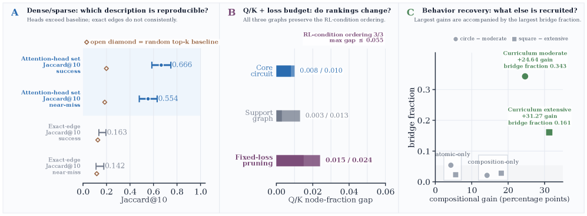
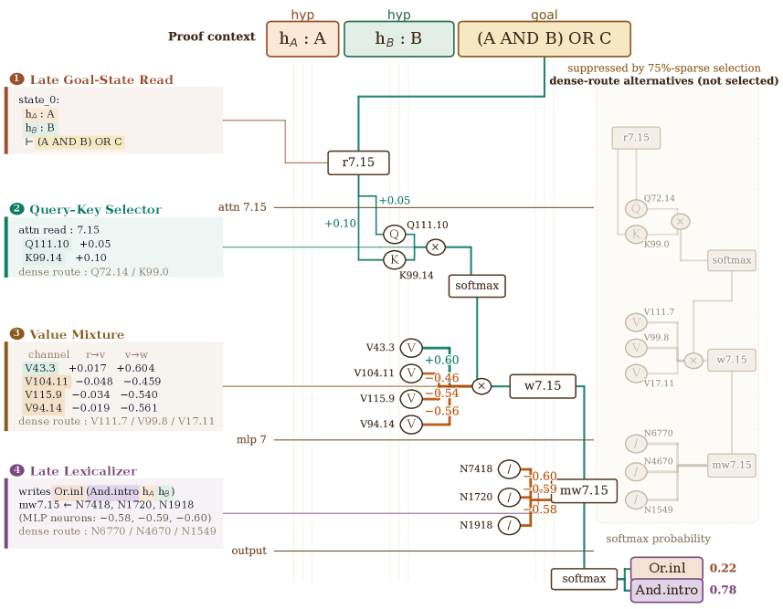
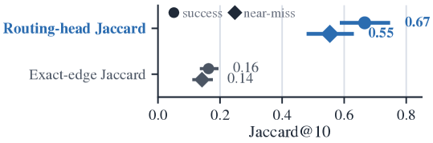
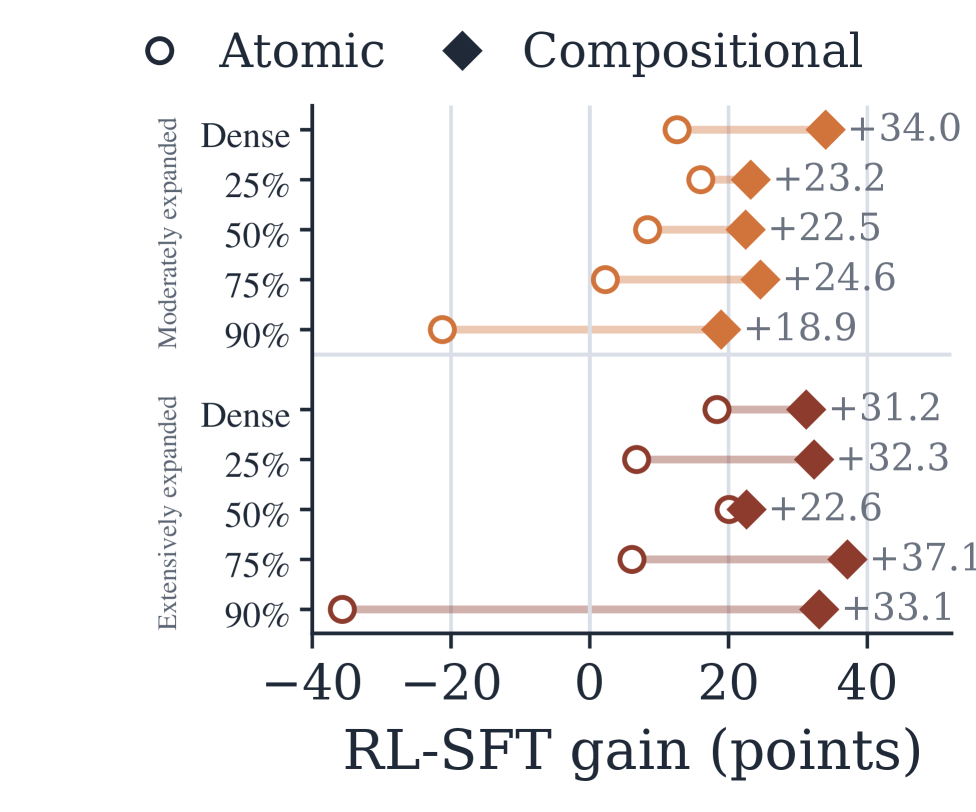

Builds a synthetic Lean tactic-prediction benchmark of propositional proofs and studies circuits in transformers trained to predict the first Lean tactic.
Abstract
Circuit extraction identifies model components whose presence preserves a target behavior under ablation, but preserving behavior does not single out one circuit. We study this in a synthetic Lean tactic-prediction benchmark with fixed proof rules and randomized surface form. Across dense and weight-sparse checkpoints of the same transformer, evaluated on atomic and compositional proofs, we vary which extracted object is reported: a compact prediction-preserving circuit, a broader graph retaining surrounding read, write, and routing structure, or a subgraph extracted with a post-ablation loss budget. First, overlap between groups of component-to-component connections is low, sometimes close to a random baseline. Overlap is much higher for selected attention-head sets under deterministic selection, but falls sharply when selection among equally scored heads is randomized. Second, the normalized graph-size ranking of conditions that differ in which supervised checkpoint initializes reinforcement learning (RL) agrees between repeated extractions of the compact circuit and between joint and separate query/key representations of each of the other two graphs. For the loss-budgeted graph, query/key ordering agreement persists through the budget sweep. Finally, across those same conditions, the largest exact-match accuracy gains from RL on compositional proofs come with the largest proportion of components in the compositional circuit that lie outside the corresponding atomic circuits. Ablating these additional components in the sparse RL model reduces compositional accuracy while largely preserving accuracy on the corresponding atomic tasks. A circuit-level claim therefore requires specifying which circuit is reported and how it is extracted and compared; behavior alone does not determine its interpretation. We distill these requirements into a reporting practice for circuit-extraction studies.
Problem
Circuit extraction finds components that preserve a behavior under ablation, but many circuits can preserve the same behavior. As a result, circuit-level claims may depend on methodological choices rather than on the mechanism itself.
Approach
The authors build nine synthetic Lean tactic-prediction tasks, four atomic and five compositional, generated from fixed propositional proof rules with randomized names and distractor hypotheses. They train dense and weight-sparse 8-layer transformers with SFT and then RL under several initialization and curriculum conditions. They extract three kinds of graph: a compact core circuit, an extended support graph, and a loss-budgeted pruning subgraph. These are compared under merged versus separate query/key nodes and at the levels of exact edges and attention-head sets.

Figure 1 : Overview of the three findings. A : at the primary dense-versus- 75\% -sparse comparison point, the set of selected attention heads overlaps much more across the dense and 75\% weight-sparse RL checkpoints than the exact component-to-component edge lists do; the head-level overlap is also far above a random top- k baseline, while the exact-edge overlap is not consistently above it (Tabl

Figure 4 : Representative 75\% weight-sparse RL case for AND-OR . Arrows denote the direction of information flow. The recurring pattern is a coarse read-to-write path: a late-position read \rightarrow a compact query/key selector (the attention pattern that decides what to attend to) \rightarrow a small group of value-vector components carrying signed contributions \rightarrow the attention write
Results
Exact-edge overlap between dense and sparse checkpoints is low (Jaccard@10 about 0.15), near a random baseline, while routing-head-set overlap is high (0.55–0.67). RL-condition orderings by graph size are preserved across graph types, query/key representations and loss budgets. The largest compositional RL gains (curriculum RL) coincide with the largest bridge fractions. Ablating the bridge components reduces compositional accuracy while largely sparing atomic accuracy.

Figure 3 : Routing-head sets are more reproducible than exact edge lists under the same extraction method for dense and 75\% weight-sparse RL checkpoints. The head-level summary groups top routing edges by attention-head identity before computing Jaccard@10. Intervals are 95% bootstrap intervals over matched task-object entries; semantic Jaccard@10 matches structural Jaccard@10 in this comparison

A Compositional gains.
Family
Condition
SFT comp.
RL comp.
Δ comp.
Moderate
Curriculum
43.83
68.47
24.64
Moderate
Atomic-only
0.00
4.27
4.27
Moderate
Composition-only
36.36
50.56
14.20
Extensive
Curriculum
46.73
78.00
31.27
Extensive
Composition-only
39.69
57.80
18.11
Compositional-task accuracy before (SFT) and after RL by expanded family and RL condition